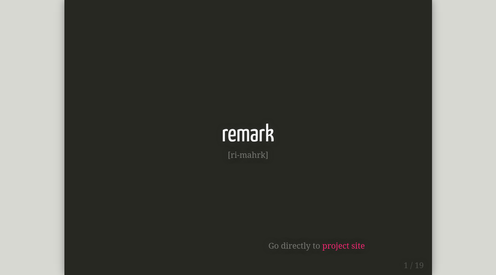
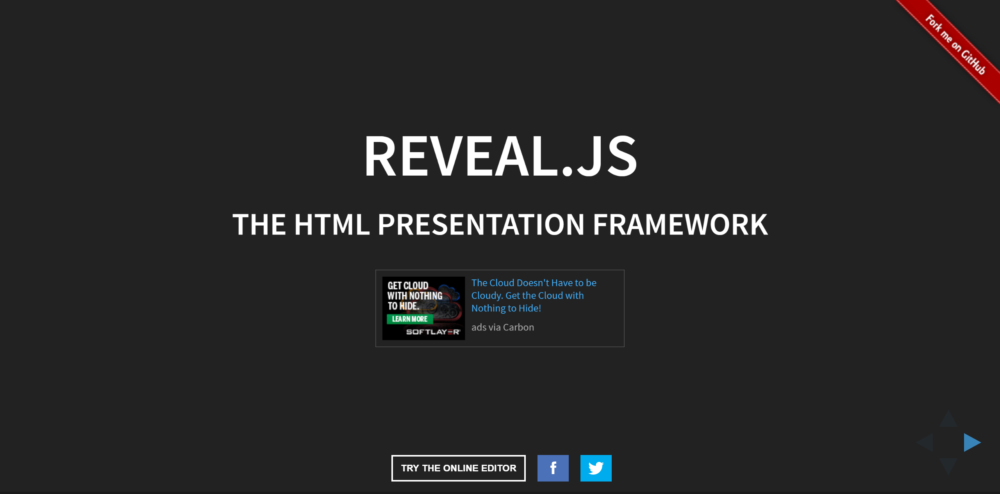
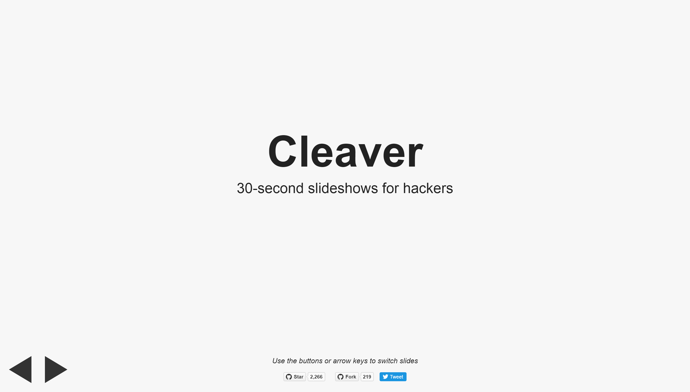
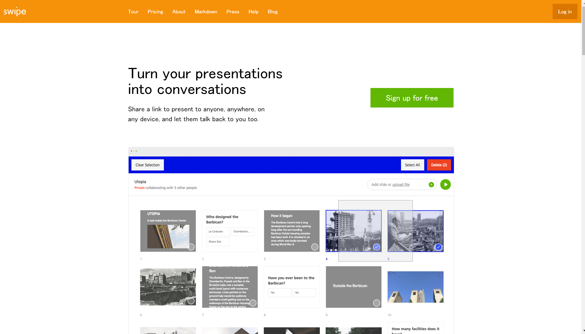

自己紹介
名前：深野大我
出身：埼玉県熊谷市
年齢：24歳
職種：コーダー
趣味：サバゲー、ドライブ、動画編集
こんな人です
パワポで資料を作っていると・・・
共有や公開が面倒・・・
テンプレート通りではなく、自由な形で作成したい
OSによって互換性が違う
ライブラリで何ができるのか
html(markdown)で作るので公開&共有しやすい
cssやjsを用いるので、デザインや動きの調整も可能
基本的にOSやバージョンにとらわれない
Remark
https://github.com/gnab/remark

特徴
長所
普通に作るだけならmarkdownファイルを編集するだけ
シンプルな資料作りに向いている
短所
縦もしくは横の1方向にしか作れない(このプレゼンのように2方向に作れない)
スタイルはcssを使い初めから自力で調整する必要がある
Reveal.js
https://github.com/hakimel/reveal.js/

特徴
長所
chromeでPDF化できる
（URL文末に?print-pdfをつけた状態でCMD(winの場合はCtrl)+Pで印刷ダイアログを表示し、出力先をpdfに設定）
縦横2方向のスライドを作ることができる
豊富なスタイルがあらかじめ用意されている
markdownとhtmlを1つのhtmlソースで併用できる
短所
markdownで簡略化できるとはいえ、htmlマークアップ量が他より多くなるので、調整の手間が多い
図や表、アニメーションを使う場合、htmlとmarkdownを両方記述しなければいけない
Cleaver
https://github.com/jdan/cleaver

特徴
長所
コマンド
npm install cleaver
1行でインストール可能
デザインテンプレートを選べる
短所
node.jsをインストールしていないとそもそもインストールできない
mdファイルを編集するたびに、コマンドでhtmlに変換する必要がある
Reveal.js
-なぜなら-
2方向にスライドを作ることが出来るので、段落ごとにまとめやすい
それにより、3次元的な動きを実装出来るので、「プレゼンで魅せること」に一番適していると判断
Swipe
